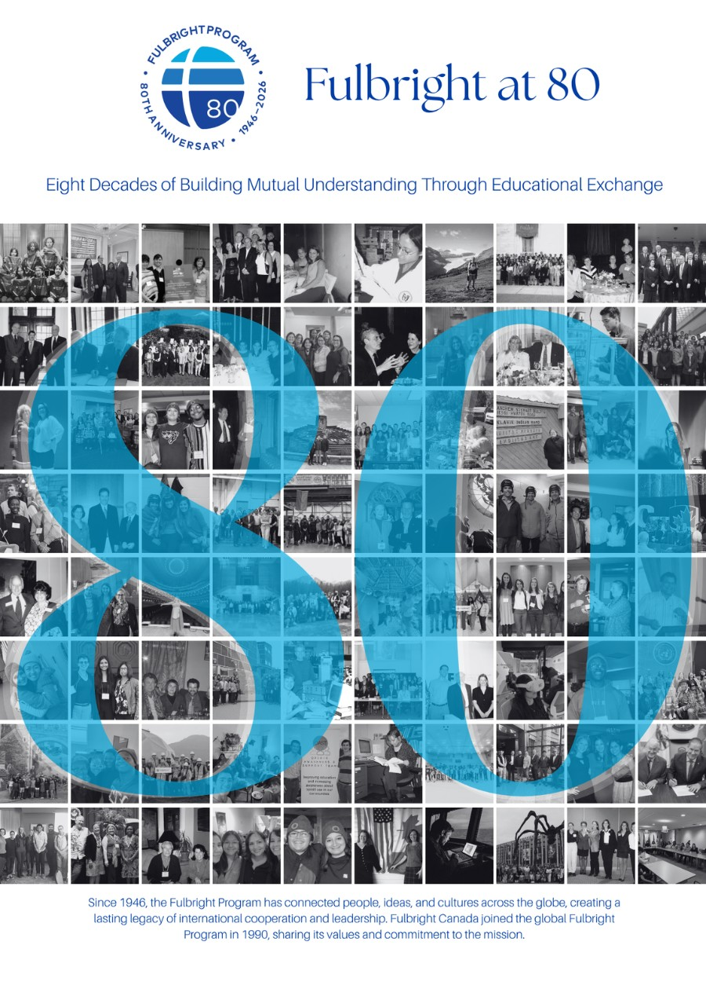
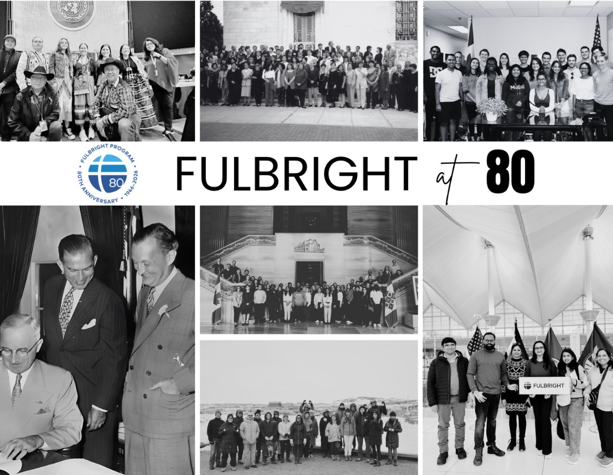

1946—2026 · EIGHT DECADES OF EXCHANGE
Some stories are
meant for the future.
A collection of memories, ideas and moments shared by the Fulbright community—preserved today for the people who will open this capsule in 2100.
A MILESTONE WORTH KEEPING
Fulbright at 80
Celebrate the people, ideas and partnerships that have shaped eight decades of educational exchange.

Fulbright at 80Read the anniversary booklet ↗
The story continuesView the anniversary postcard ↗VOICES ACROSS GENERATIONS
Memories from the capsule
Every Fulbright journey is different. Together, these reflections tell a larger story of discovery, friendship and shared learning.
FROM THE FULBRIGHT CANADA ARCHIVE
The story is bigger than one memory.
Explore moments from Fulbright Canada’s community, events and exchanges in the official Flickr photo archive.
Explore all Flickr albums ↗View the 80th anniversary gathering ↗THE STORY CONTINUES
To the generations who come next:
May curiosity keep opening doors, may new friendships cross borders, and may the Fulbright spirit continue to connect people through learning and understanding.
Add your reflection to the capsule ↗